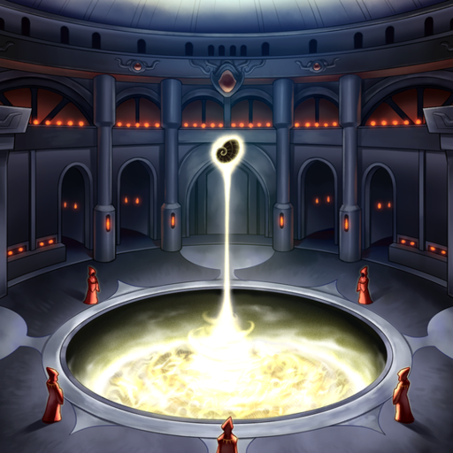
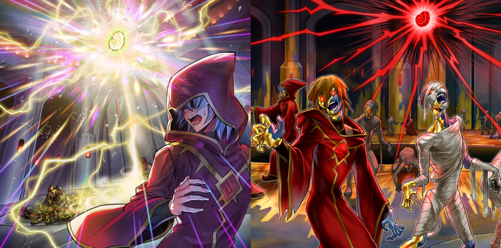
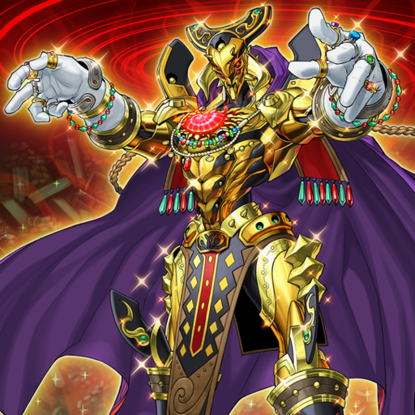

In times past, sages possessed by greed offered thousands of souls to the magic stone "Eldlixir", until it finally awakened. Shining a bright crimson, it then transformed the land its light touched upon into a golden city, the very picture of wealth. But all life within it was reduced to shambling undead.

The legend of that city ruled by gold and undeath became known around the world as "Eldland, the Golden Land". Those greedy enough to search it out provided a constant source of fuel for the magic stone's ever-growing power.

The stone that had led countless travelers to their doom ultimately found itself in the hands of one inhumanly strong-willed man. And so, "Eldlich the Golden Lord", a being unparalleled in his greed, and immortal ruler of the "Golden Land", was born.

The target of his desire wasn't limited to just the "Golden Land", it also extended to the outside world. "Eldlich" performed a ritual that focused the golden curse on himself, which raised the curtain on his march to conquer the world itself.

The merciless curse of the magic stone made no distinctions on who or what it ensnared. Gold-hungry travelers, armies from beyond the sea in search of new lands to conquer, and the native beasts of the bewitched city were all transformed into deathless gold.